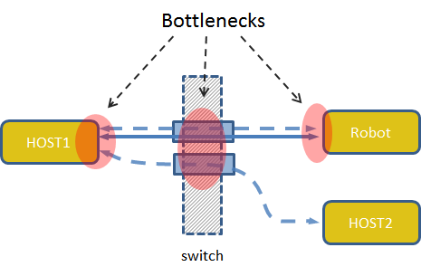
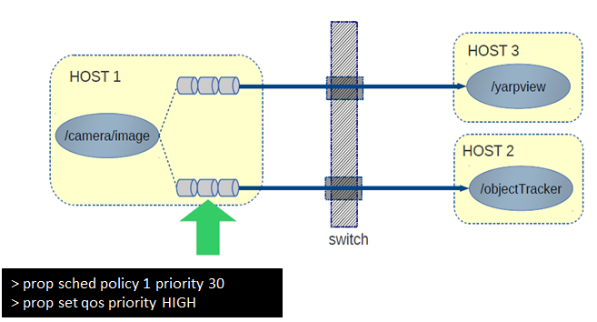

|
YARP
Yet Another Robot Platform
|

|
|
YARP
Yet Another Robot Platform
|
|
When developing applications performances are affected by the available resources. This sounds like an obvious statement but it is often overlooked by users. In robotics developers should be concerned with communication latency and, perhaps more importantly, its jitter.
In a distributed system there are potential sources of bottlenecks. First of all, communication suffers if there is insufficient CPU time to delivery or retrieve messages. When using network protocols messages are queued on the network card and network switch. The situation is depicted in the figure below. Individual connections in YARP compete to get CPU time and network resources. When many components begin loading the available CPUs and using bandwidth performance may suffer.

YARP allows users to assign priorities to connections. Connections with higher priority receive more CPU time and travel faster on the network, resulting in lower latency and more deterministic behavior.
Prioritization works by increasing the priority of threads that are serving a given connection and by assigning QoS parameters to the packets so that they receive higher priority when they traverse the network (the network card and network switch).

Channel prioritization has been experimentally validated in [5] and [6] showing how it allows reducing latency and improving determinism for selected communication channels.
Suppose you want to modify the priority of the connection between /sender and /receiver.
Both the thread scheduling parameters and the packet priority of a connection are configured with the setConnectionQosOut and setConnectionQosIn administrative commands (see getConnectionQosIn / getConnectionQosOut / setConnectionQosIn / setConnectionQosOut / setProcessScheduling), which set respectively the output connection going to a port and the input connection coming from a port:
setConnectionQosOut <portname> <scheduler_priority> <scheduler_policy> <qos_tos> setConnectionQosIn <portname> <scheduler_priority> <scheduler_policy> <qos_tos>
where portname is the name of the port at the other end of the connection, scheduler_priority and scheduler_policy are the numeric (OS specific) scheduling parameters of the thread which serves the connection, and qos_tos is the numeric TOS value assigned to the IP packets of the connection. Symbolic names (e.g. SCHED_FIFO, HIGH or AF12) are not accepted: use their numeric values instead (see the table below). A scheduler_priority of -1 leaves the scheduling of the thread unchanged, while a negative qos_tos leaves the packet priority unchanged.
Firstly you can select the scheduling policy and priority for the thread that manages the communication.
$ yarp admin rpc /sender >> setConnectionQosOut /receiver 30 1 -1
The first line "yarp admin rpc" opens an administrative session with the port object of /sender. The second line is the real command to the administrative port. It adjusts the scheduling priority and policy of the thread in /sender which handles the connection to /receiver respectively to 30 and SCHED_FIFO (whose numeric value is 1) on Linux machines, leaving the packet priority unchanged. Scheduling parameters are OS specific; on Linux the policy values are SCHED_OTHER = 0 (priority 0), SCHED_FIFO = 1 and SCHED_RR = 2 (priority 1..99).
Analogously, data packet priority can be configured via administrative commands by setting the TOS value of one of the predefined priority classes:
$ yarp admin rpc /sender >> setConnectionQosOut /receiver -1 -1 144
This simply sets the outbound packets priority to HIGH (TOS 144) for the connection from /sender to /receiver, leaving the thread scheduling unchanged. The priority band affects the TOS/DSCP in the IP packets and the queuing policy used by the OS. The TOS value is the DSCP value shifted left by two bits (TOS = DSCP * 4). The TOS values of the predefined priority levels and of the standard DSCP classes are:
| level / DSCP class | DSCP | TOS |
|---|---|---|
| NORMAL, CS0 | 0 | 0 |
| LOW, AF11 | 10 | 40 |
| AF12 | 12 | 48 |
| AF13 | 14 | 56 |
| AF21 | 18 | 72 |
| AF22 | 20 | 80 |
| AF23 | 22 | 88 |
| AF31 | 26 | 104 |
| AF32 | 28 | 112 |
| AF33 | 30 | 120 |
| AF41 | 34 | 136 |
| HIGH, AF42 | 36 | 144 |
| AF43 | 38 | 152 |
| CRITICAL, VA | 44 | 176 |
| EF | 46 | 184 |
| CS1 ... CS7 | 8 ... 56 (multiples of 8) | 32 ... 224 (multiples of 32) |
The symbolic names are accepted by the higher level interfaces, which convert them to the TOS value before sending the command: yarp::os::QosStyle (e.g. QosStyle::setPacketPriority("DSCP:AF12"), or "LEVEL:HIGH", "TOS:48"), yarp::os::Network::setConnectionQos, the qos attribute of the yarpmanager applications and the yarp priority-qos companion command. Both settings can also be applied at once, e.g. setConnectionQosOut /receiver 30 1 144. The same connection, seen from /receiver, is configured with setConnectionQosIn /sender ... sent to /receiver.
The current settings of a connection can be read back with:
$ yarp admin rpc /sender >> getConnectionQosOut /receiver
which replies with ok found tid scheduler_priority scheduler_policy qos_tos, where found is fail if no connection to /receiver exists.
It is also possible to set the scheduling policy and priority of all the threads of the process which owns a port:
$ yarp admin rpc /sender >> setProcessScheduling 30 1
where the two values are respectively the scheduling priority and policy (30 and SCHED_FIFO on Linux, in this example).
The yarp priority-sched and yarp priority-qos companion commands provide a higher level interface to the same functionality.
These two set of parameters can be set for every channel in the same way and jointly define the actual priority of a communication channel in a YARP network.